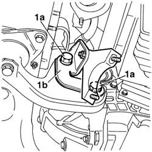
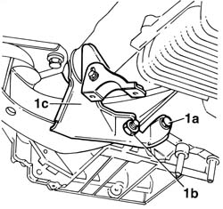
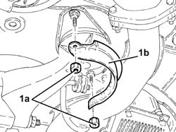
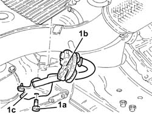
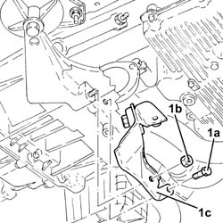
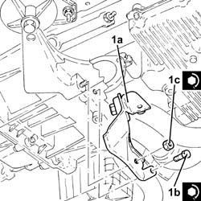
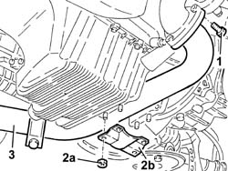
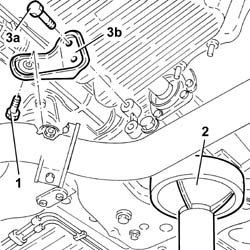
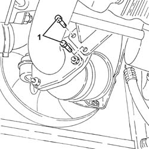
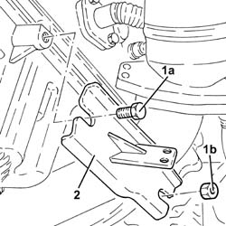

1076A32 exhaust rigid mount - r r
- Path
- Procedures > 10 ENGINE > 1076 EXHAUST PIPES AND SILENCERS > 1076A exhaust pipe fastenings and protections > 1076A32 exhaust rigid mount - r r
- Kind
- repair procedure (removal / refitting; the operation number is the code)
- Applies to
- engines: 1.6 TS , 1.8 TS, 2.0 JTS, 2.5 V6, 1.9 JTD 8v , 2.0 JTS, 2.4 JTD 10v; all production periods
- Interactive page
- https://sloeber94.github.io/elrnDB-a156/en/#/3237563
Applies to: engines: 2.5 V6; all production periods
 Removing
Removing
 Refitting
Refitting7055B54 under-engine guard - r r
1076B52 exhaust pipe (one) leaving l/h or r/h exhaust manifold - r + r
Position a hydraulic jack under the engine.
1. Undo the bolts (1a) and remove the exhaust pipe rigid mount (1b).

Applies to: engines: 2.5 V6; all production periods
Refitting
RemovingFit the rigid mount for the exhaust pipe and fix it by tightening the bolts to the specified torque.
 | Fastening | Component | Ø | Value (daNm) |
|---|---|---|---|---|
- | Bolt | POWER UNIT RIGID REAR MOUNT | M16 | 10.2 - 12.6 |
1076B52 exhaust pipe (one) leaving l/h or r/h exhaust manifold - r + r
Applies to: engines: 1.6 TS , 1.8 TS; all production periods
Removing
Refitting7055B54 under-engine guard - r r
1076B50 exhaust pipe attachment to engine - r + r
1. Undo bolt (1a) and nut (1b) securing the rear rigid mount and remove the exhaust pipe rigid mount (1c).

Applies to: engines: 1.6 TS , 1.8 TS; all production periods
Refitting
RemovingFit the exhaust pipe rigid mount, tighten the crankcase/gearbox bolt and tighten the rear rigid mount retaining nut.
| Fastening | Component | Ø | Value (daNm) |
|---|---|---|---|---|
- | Bolt | EXHAUST PIPE RIGID MOUNT | M12 | 8.1 - 11.7 |
| Fastening | Component | Ø | Value (daNm) |
|---|---|---|---|---|
- | Nut | POWER UNIT RIGID REAR MOUNT | M12 | 8.1 - 11.7 |
Applies to: engines: 1.6 TS , 1.8 TS; all production periods; only with equipment: Euro 3
Removing
RefittingPosition the vehicle on the ramp.
Proceed with the removal 7055B54 under-engine guard - r r .
1. Undo the nuts (1a) and remove the heat shield (1b).

Applies to: engines: 1.6 TS , 1.8 TS; all production periods; only with equipment: Euro 3
1. Undo bolt (1a), release flexible block (1b) and remove the exhaust pipe rigid mount (1c).

Applies to: engines: 1.6 TS , 1.8 TS; all production periods; only with equipment: Euro 3
Refitting
RemovingRefit the exhaust pipe rigid mount, connect the flexible block and secure with a bolt.
Refit the heat shield in its housing and fix it with the nuts.
Proceed with the refitting 7055B54 under-engine guard - r r .
Remove the car from the ramp.
Applies to: engines: 2.0 JTS, 2.0 JTS; all production periods
Removing
RefittingPosition the vehicle on the ramp.
Proceed with removal 7055B54 under-engine guard - r r .
Proceed with removal 1076B18 rigid section of exhaust pipe between catalytic converter and silencer - r + r .
1. Undo the bolt (1a), nut (1b) and remove the exhaust pipe rigid mounting (1c).

Applies to: engines: 2.0 JTS, 2.0 JTS; all production periods
Refitting
Removing1. Fit the rigid mount of exhaust pipe (1a) and secure by tightening bolt (1b) and nut (1c) to the specified torque.
| Fastening | Component | Ø | Value (daNm) |
|---|---|---|---|---|
1b | Bolt | EXHAUST PIPE RIGID MOUNT | M8 | 2.3 ÷ 2.8 |
| Fastening | Component | Ø | Value (daNm) |
|---|---|---|---|---|
1c | Nut | EXHAUST PIPE RIGID MOUNT | M12 | 6.8 ÷ 8.3 |

Applies to: engines: 2.0 JTS, 2.0 JTS; all production periods
Proceed with refitting 1076B18 rigid section of exhaust pipe between catalytic converter and silencer - r + r .
Proceed with refitting 7055B54 under-engine guard - r r .
Remove the car from the ramps.
Applies to: engines: 1.9 JTD 8v , 2.4 JTD 10v; all production periods
Removing
RefittingPosition the vehicle on the ramp.
Raise the vehicle.
1. Unscrew the bolts securing the front exhaust pipe section to the turbocharger.
2. Undo the nuts (2a) and remove the reinforcement bracket (2b).
3. Lower the front exhaust pipe section as necessary.

Applies to: engines: 1.9 JTD 8v , 2.4 JTD 10v; all production periods
1. Undo the bolt securing the exhaust pipe rigid support to the collar.
2. Position a hydraulic jack under the gearbox.
3. Undo bolts (3a) and remove exhaust pipe rigid support (3b).

Applies to: engines: 1.9 JTD 8v , 2.4 JTD 10v; all production periods
Refitting
RemovingFit the rigid support for the exhaust pipe and fix it to the gearbox by tightening the bolts to the specified torque.
| Fastening | Component | Ø | Value (daNm) |
|---|---|---|---|---|
- | Bolt | EXHAUST PIPE RIGID MOUNT | M12 | 7.5 - 9.2 |
Remove the hydraulic jack from under the gearbox.
Tighten the bolt securing the exhaust pipe rigid support to the collar.
Fit the reinforcement bracket and fix it using the nuts.
Tighten the bolts securing the front section of the exhaust pipe to the turbocharger to the specified torque.
| Fastening | Component | Ø | Value (daNm) |
|---|---|---|---|---|
- | Bolt | FLEXIBLE PIPE SECTION TO ENGINE | M8 | 2.0 - 2.5 |
Lower the vehicle.
Remove the car from the ramp.
Applies to: engines: 1.9 JTD 8v ; production: da 04/98 a 02/99; only with equipment: 115 CV
Removing
RefittingPosition the vehicle on the ramp.
Proceed with the removal 7055B54 under-engine guard - r r .
1. Undo the bolts fixing the rigid support for the exhaust pipe to the catalytic preconverter.

Applies to: engines: 1.9 JTD 8v ; production: da 04/98 a 02/99; only with equipment: 115 CV
1. Undo the bolt (1a) and the nut (1b) fixing the rigid support for the exhaust pipe to the crankcase sump.
2. Remove the rigid exhaust pipe support.

Applies to: engines: 1.9 JTD 8v ; production: da 04/98 a 02/99; only with equipment: 115 CV
Refitting
RemovingPlace the rigid support for the exhaust pipe back in its housing.
Tighten the bolt and the nut fixing the rigid support for the exhaust pipe to the crankcase sump.
Tighten the bolts fixing the rigid support for the exhaust pipe to the catalytic preconverter.
Proceed with the refitting 7055B54 under-engine guard - r r .
Remove the car from the ramp.
Topics linked from this page (4)
- 1076B18 rigid section of exhaust pipe between catalytic converter and silencer - r + r
- 1076B50 exhaust pipe attachment to engine - r + r
- 1076B52 exhaust pipe (one) leaving l/h or r/h exhaust manifold - r + r
- 7055B54 under-engine guard - r r
Topics that link to this page (13)
- 1008A44 rear rigid mount - r r
- 1008B20 power unit intermediate mount flexible block - replace
- 1020D36 flywheel end oil seal - replace for manual gearbox with hydraulic selection versions
- 1024B11 engine flywheel - r r for manual gearbox with hydraulic selection versions
- 1810A28 clutch - r r for manual gearbox with hydraulic selection versions
- 2110A11 manual gearbox with differential - r r for versions with hydraulic selection
- 2110C24 seals for gearbox input shaft - r r for manual gearbox with hydraulic selection versions
- 4130A13 POWER ASSISTED STEERING BOX - R.R. - If necessary. check wheel toe in separately - Includes. bleeding air - on right hand drive versions
- 4130B41 outlet pipe from pump to power steering case r r for right hand drive versions
- 4130B67 return pipe between outlet pipe from power steering case and intermediate pipe r r for right hand drive versions
- 4130B83 return pipe between rigid intermediate return pipe to fluid resevior r r for right hand drive versions
- 4130B93 RIGID return PIPE from INTERMEDIATE rubber PIPE to rubber PIPE for power assisted steering fluid RESERVOIR - R.R. Includes bleeding air - for right hand drive versions
- 5520B10 starter motor - r+r